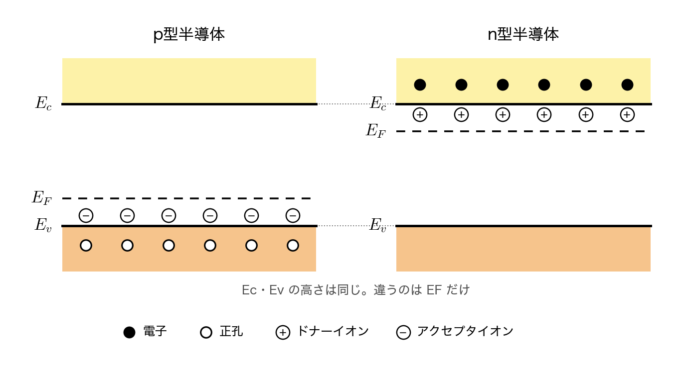
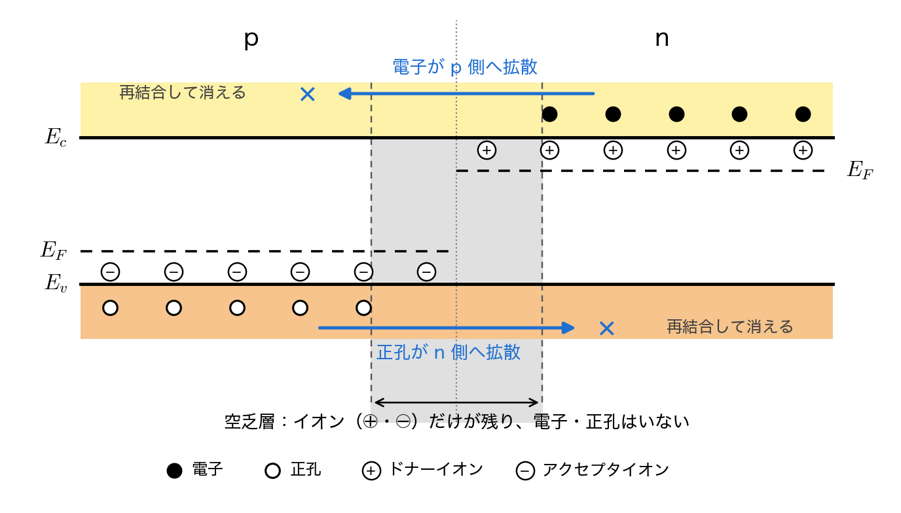
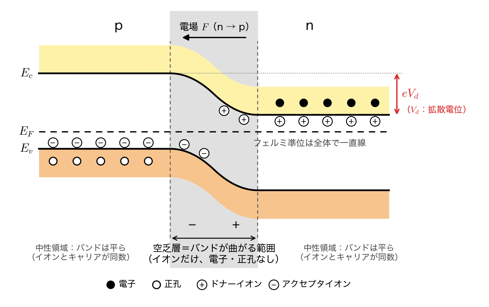
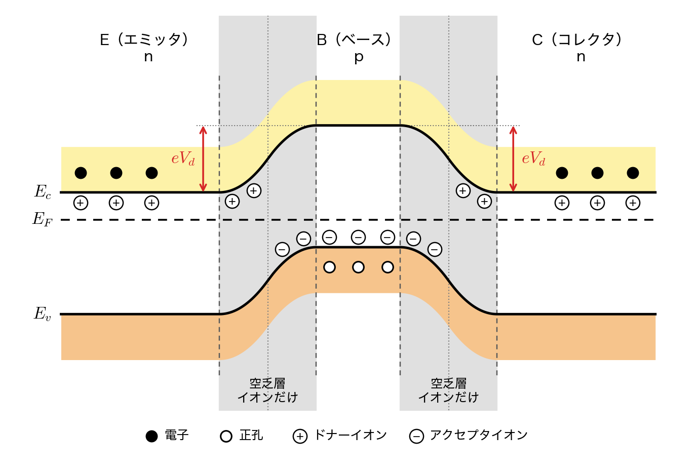
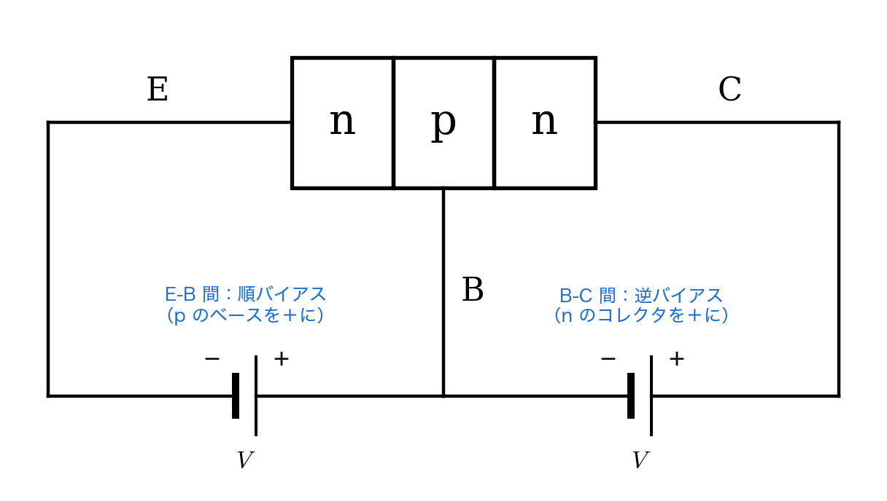
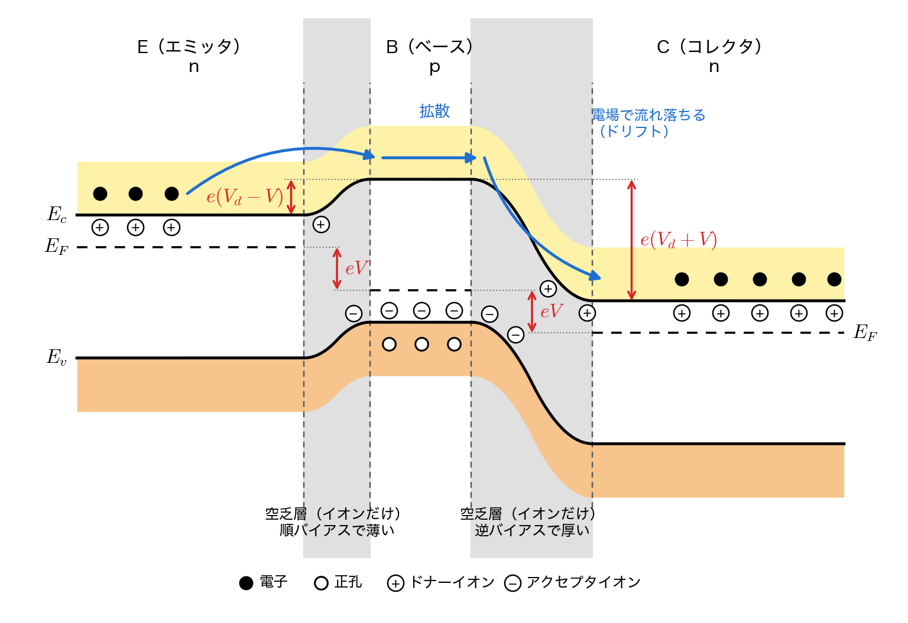

☑️ パワーエレクトロニクス（ 2 ） 演習問題 解答・解説
📝 総評
共通の改善点
- 図だけで答えない。問題文に「説明しなさい」とある場合は、図に加えて文章での説明が必須。図は説明の補助資料であり、図だけでは説明したことにならない。
- バンド曲がりの物理的理由を正確に。エネルギーバンドが曲がるのは、空乏層（キャリアがなくドナーイオン・アクセプタイオンのみの領域）に電荷の偏りが生じるから。バンドが曲がっている領域を空乏層として描けていない解答が見られた。
- 写真の品質。ぼやけていて読めない提出があった。明るい場所で、紙全体が隙なく写るように撮ること。ブレているものは採点対象として読めない場合がある。
次回に向けて
- 「図（空乏層・キャリアの有無を明記）＋ 文章で物理的理由」のセットで書くこと。
🗒️ 第2回は、講義で見た「キャリアが拡散する → 動けないイオンが残る → 電場ができる → バンドが曲がる → フェルミ準位がそろって平衡になる」という流れを、自分でバンド図を描いて確かめる問題です。問題1で pn 接合を1つ、問題2と問題3でそれを2つ並べた npn トランジスタを扱います。
図の向きは問題の解答用の枠に合わせて、左が p型・右が n型（問題2・3 は左から E・B・C）です。講義のスライドは左が n型・右が p型なので、左右が反対になっています。左右どちらで描いても、中身が合っていれば正解です。
総評に合わせて、図には空乏層の範囲（灰色の帯と両端の破線）と、そこにはイオンだけがあって電子・正孔がいないことを書き込みました。「説明しなさい」の問は、図とは別に文章で説明しています。
問題1：pn接合の形成過程
p型半導体とn型半導体を接合して平衡状態になるまでの過程を説明するために、以下の(1)、(2)の問いに答えなさい。
(1)、(2)のバンド図には、電子（●）、正孔（○）、ドナーイオン（⊕）、アクセプタイオン（⊖）も描き込むこと。どこに、どれだけあるかが分かるように描く。書き方の例（真性半導体）を下に示す。

(1)、(2)のバンド図は、下の枠を解答用紙に写して描き込んでよい。

(1) 接合した直後に何が起こるかを、エネルギーバンド図を描いて説明しなさい。バンド図は、接合する直前のp型半導体とn型半導体のそれぞれについて、伝導帯の下端$E_c$、価電子帯の上端$E_v$、フェルミ準位$E_F$の位置関係が分かるように描き、それを使ってキャリア（電子と正孔）がどちらへ動くかを示すこと。また、その結果として接合界面付近に形成される領域を何と呼ぶか。
接合する直前のバンド図
p型も n型も同じシリコンなので、伝導帯の下端 $E_c$ と価電子帯の上端 $E_v$ の高さは両側で同じです。違うのはフェルミ準位 $E_F$ の位置だけです。
- p型：3価の不純物（アクセプタ）が価電子帯から電子を1個ずつ受け取ってアクセプタイオン ⊖ になり、受け取った数だけ価電子帯に正孔 ○ ができます。⊖ は $E_v$ のすぐ上の準位に描きます。正孔が多いので、$E_F$ は $E_v$ の側に寄ります。
- n型：5価の不純物（ドナー）が電子を1個ずつ伝導帯に出してドナーイオン ⊕ になり、出した数だけ伝導帯に電子 ● があります。⊕ は $E_c$ のすぐ下の準位に描きます。電子が多いので、$E_F$ は $E_c$ の側に寄ります。
どちらも、⊖ と ○ の数、⊕ と ● の数が同じなので、全体としては電気的に中性です。図でも同じ数を描きます。

接合した直後に起こること
接合すると、n型には電子がたくさんあり、p型にはほとんどありません。この濃度の差によって、電子は n型から p型へ拡散します。同じように、正孔は p型から n型へ拡散します。
移った先で、電子は p型にたくさんある正孔と出会って再結合し、消えます。正孔も n型の電子と再結合して消えます。その結果、接合界面の付近ではキャリア（● と ○）がいなくなり、結晶に固定されて動けないイオンだけが残ります。p型の側には ⊖、n型の側には ⊕ が残ります。

このように、キャリア（電子・正孔）がいなくなって、ドナーイオン ⊕ とアクセプタイオン ⊖ だけが残った領域を空乏層と呼びます。イオンは結晶に固定されていて動けないので、空乏層の中は p側が −、n側が ＋ に帯電した状態になります。この電荷の偏りが、次の (2) でバンドが曲がる原因になります。
(2) 最終的な平衡状態におけるpn接合のエネルギーバンド図を描きなさい。なぜバンドが曲がるのか、そしてなぜフェルミ準位は空間的に一定になるのかを説明しなさい。

なぜバンドが曲がるのか
理由は、空乏層に電荷の偏りがあるからです。順番に書くと、空乏層の電荷の偏り → 電場 → 電位の変化 → バンドの曲がり、となります。
空乏層は、キャリア（電子・正孔）がいなくなって、ドナーイオン ⊕ とアクセプタイオン ⊖ だけが残った領域です。中性の部分ではイオンの電荷をキャリアが打ち消していますが、空乏層には打ち消す相手がいません。そのため、p型の側は ⊖ で −、n型の側は ⊕ で ＋ に帯電し、電荷が偏ります。電荷が偏っているので、電場が生まれます。電場は ＋ から − へ向かうので、n型から p型への向きです。
電場があると電位差が生じます。電場は電位の高い方から低い方へ向かうので、電位は n型の側が高く、p型の側が低くなります。電子のエネルギーは $-e\phi$ なので、電位とは上下が逆になり、n型の側が低く、p型の側が高くなります。つまり、n型のバンドが下がり、p型のバンドが上がる向きに曲がります。
曲がるのは電荷がある空乏層の中だけです。空乏層の外側は、イオンとキャリアが同じ数あって電気的に中性なので電場がなく、バンドは平らなままです。言いかえると、バンドが曲がっている範囲がそのまま空乏層です。図でも、バンドが曲がり始める所と曲がり終わる所に破線を引いて、その間を空乏層として描いています。
なぜフェルミ準位が一定になるのか
空乏層の電場は、拡散してくるキャリアを押し戻す向きにはたらき、ドリフト電流を流します。拡散が進むほどイオンが増えて電場が強くなり、押し戻すドリフト電流も大きくなります。やがて拡散電流とドリフト電流が釣り合い、電流が流れなくなります。これが平衡状態です。
$E_F$ は、電子がどの高さのエネルギーまで詰まっているかを表す目安です。もし $E_F$ に段差が残っていると、$E_F$ の高い側から低い側へ電子が移り続け、電流が流れます。平衡状態は電流が流れない状態なので、電子の移動が止まるのは $E_F$ が全体で同じ高さにそろったときです。したがって、平衡状態では $E_F$ は場所によらず一定になります。
図に描き込むもの
- $E_F$ は全体で一直線。中性の部分では、接合前と同じ位置関係（p型は $E_v$ 寄り、n型は $E_c$ 寄り）のままです。
- p型の $E_c$ は n型の $E_c$ より $eV_d$ だけ高くなります。$V_d$ が拡散電位で、$eV_d$ は接合前の両側の $E_F$ の差に等しくなります。この段差が、前回見たダイオードがオンのときの電圧降下の原因です。
- バンドが曲がっている範囲を空乏層として示します（範囲を破線や矢印で示し、「空乏層」と書く）。空乏層の中にはイオンだけを描き、● と ○ は描きません。「キャリアなし」と書き添えておくと、なおよいです。p側の ⊖ と n側の ⊕ は同じ数です（電荷が釣り合っているため）。
- 空乏層の外側は、接合前と同じく ⊖ と ○、⊕ と ● が同じ数です。
問題2：バイポーラトランジスタのバンド構造
下図は、トランジスタなどに用いられるバイポーラトランジスタの構造である。
この時の熱平衡状態におけるバンド構造を図示せよ。*n型・p型・n型半導体の接合のみで良い。

下の枠を解答用紙に写して、バンド図を描き込んでよい。

講義で確認した手順どおりに描きます。
- 接合前の3つのバンド（n型・p型・n型）を、$E_c$ と $E_v$ の高さをそろえて並べます。
- 熱平衡状態では、3つの層の全体で $E_F$ が一直線にそろいます。
- E-B 間と B-C 間の2つの接合に、それぞれ問題1の pn 接合の曲がり方を当てはめます。
どちらの接合でも p型（ベース）の側のバンドが高く、n型の側が低くなるので、ベースのところが盛り上がった「山」の形になります。2つの接合のそれぞれに空乏層ができ、その中だけでバンドが曲がります。曲がる理由は問題1と同じで、空乏層にはキャリアがなくイオンだけが残っているので電荷が偏り、その電荷が電場をつくって電位を変えるからです。だから、図でもバンドが曲がっている2つの範囲を空乏層として示します。
キャリアとイオンの描き方は問題1と同じです。エミッタとコレクタ（n型）は $E_c$ のすぐ下に ⊕、伝導帯に同じ数の ● を描きます。ベース（p型）は $E_v$ のすぐ上に ⊖、価電子帯に同じ数の ○ を描きます。空乏層の中にはイオンだけが残り、各接合の n 側に ⊕、p 側（ベース側）に ⊖ が同じ数あります。イオンはバンドの曲がりに沿って並べます。

エミッタの電子から見ると、ベースは高さ $eV_d$ の壁です。この状態ではエミッタからコレクタへ電子は流れません。図は3つの層の不純物濃度を同じとして描いたので、2つの段差はどちらも $eV_d$ です。濃度が違えば接合前の $E_F$ の位置が違うので、2つの段差の大きさや空乏層の幅は同じでなくてもかまいません。
問題3：バイポーラトランジスタの順方向バイアス
バイポーラトランジスタはE(エミッタ)-B(ベース)間に順方向バイアス、B(ベース)-C(コレクタ)間に逆バイアスをかけると、電子をE(エミッタ)からC(コレクタ)に流すことができる。この時の電圧源はどのような向きで接続すれば良いか。下図の四角に電圧源を向きがわかるように記入せよ。

講義の pn 接合では、「p型の側にプラスをつなぐ」と順バイアスになり、反対に n型の側にプラスをつなぐと逆バイアスになりました。これを2つの接合に当てはめます。
- E-B 間（順バイアス）：p型のベース B をプラスにします。左の四角は、左端が外側の配線を通ってエミッタ E に、右端がベース B につながっているので、右側を＋、左側を−にします。
- B-C 間（逆バイアス）：n型のコレクタ C をプラスにします。右の四角は、左端がベース B に、右端が外側の配線を通ってコレクタ C につながっているので、右側を＋、左側を−にします。
2つとも右側が＋になります。電位は E、B、C の順に $V$ ずつ高くなります。

この時のエネルギーバンド図を図示せよ。エネルギーバンドは$E_{c},E_{F},E_{v}$がわかるように明記せよ。ここで、拡散電位を$V_{d}$、印加した二つの電圧源の電圧を$V$とする。問題２と同じく、下の枠を使ってよい。
エミッタを基準にして、電位が高くなったところでは電子のエネルギーが下がる（$-e\phi$）ことを使います。
- ベースはエミッタより電位が $V$ 高いので、ベースのバンドと $E_F$ は $eV$ だけ下がります。E-B 間の障壁は $eV_d$ から $e(V_d - V)$ に低くなります。
- コレクタはベースよりさらに電位が $V$ 高いので、コレクタのバンドと $E_F$ はベースよりさらに $eV$ 下がります。B-C 間の段差は $eV_d$ から $e(V_d + V)$ に大きくなります。
- 電圧をかけている間は電流が流れるので、$E_F$ は一直線ではありません。E→B で $eV$、B→C で $eV$ 下がり、コレクタの $E_F$ はエミッタより $2eV$ 低くなります。
- バンドが曲がるのは、ここでも空乏層（イオンだけでキャリアがない範囲）の中だけです。空乏層の幅は障壁が低いほど薄く、高いほど厚くなるので、E-B 間の空乏層は薄く、B-C 間の空乏層は厚くなります。空乏層に残るイオン（n 側の ⊕、p 側の ⊖）も、E-B 間では少なく、B-C 間では多くなります。
- 空乏層の外側は、問題2と同じくイオンと多数キャリアが同じ数です（エミッタ・コレクタは ⊕ と ●、ベースは ⊖ と ○）。

この図から、電子が E から C へ流れる理由が読み取れます。E-B 間の障壁が $e(V_d - V)$ に下がったので、エミッタの電子はベースへ入れるようになります。ベースに入った電子は少数キャリアとして拡散で進みます。B-C 接合に着くと、そこは障壁ではなく $e(V_d + V)$ の急な下り坂になっているので、空乏層の電場によってコレクタへ流れ落ちます（ドリフト）。ベースの中で正孔と再結合してしまう電子は、ベースを抜けるまでの距離が短いほど少なくなります。